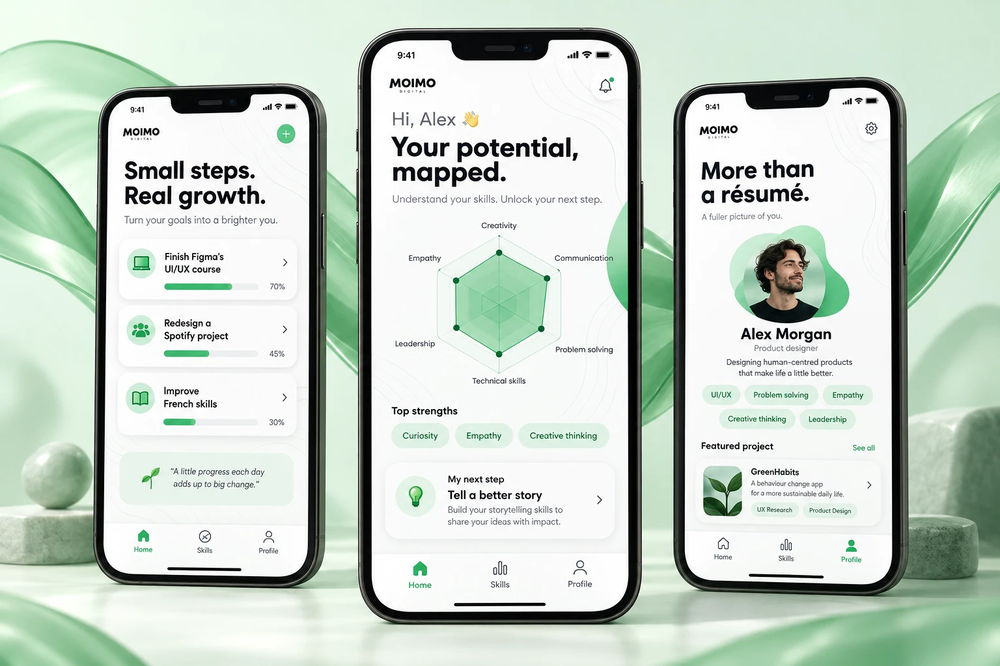

Start with reflection, not a score
Short, everyday situations make abstract strengths easier to think about. The proposed flow asks what comes naturally, using plain language and a few clear choices.
Moimo
A more personal way to explore your strengths. Moimo turns skills, ambitions and small learning goals into a living picture of who you are — and who you want to become.

A conceptual extension of the original Moimo designs. The new screens explore a possible product direction; the people, progress and projects shown are illustrative.
Job titles and qualifications can describe where someone has been. They say less about how that person thinks, collaborates or learns. This concept asks a different question: what if a professional profile started with your potential?
The original screens already connected a personal dashboard, goals and skills. This exploration builds on that foundation with three connected moments: recognise a strength, choose a next step and make that growth visible.
Short, everyday situations make abstract strengths easier to think about. The proposed flow asks what comes naturally, using plain language and a few clear choices.
A skill map offers a starting point. Small learning goals turn that reflection into something actionable, with progress tied to completing steps rather than competing with other people.
Strengths sit alongside work and interests. The profile brings together what someone values, what they are practising and the projects that give those qualities context.
White surfaces keep the content calm. Mint and leaf green connect the new screens to the original identity, while soft contour lines turn the idea of a personal map into a visual thread. Rounded cards and friendly typography make the experience feel approachable.
Can people recognise themselves in the suggested strengths? Does the map help them choose a useful action? The next step would be to test those questions with a clickable prototype. The skill map is a reflection tool, not a validated assessment or a hiring score.